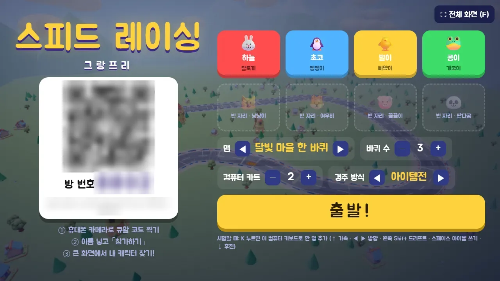
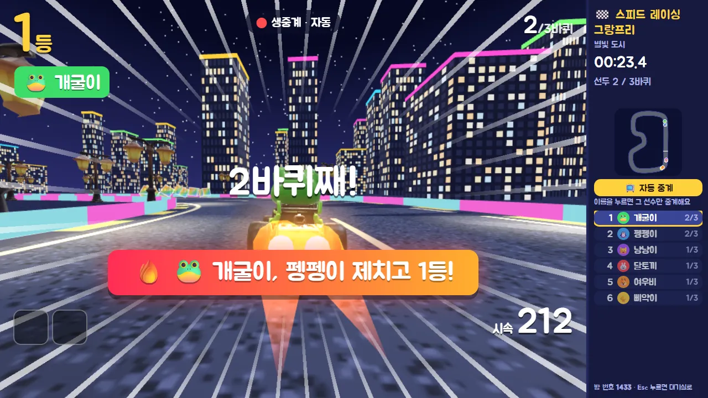
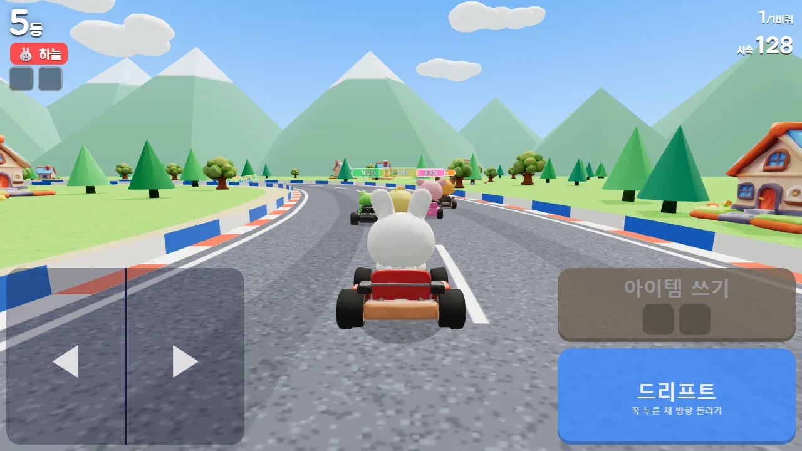
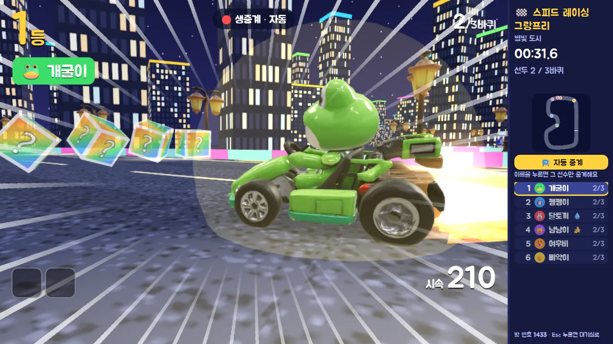
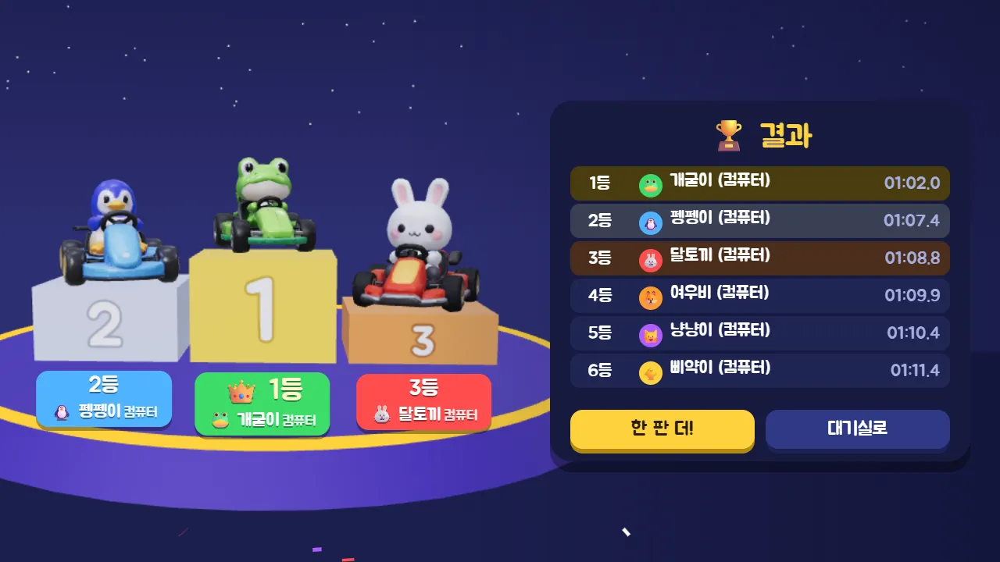

행사 진행용 · 최대 8명 · 큰 화면 중계
✈️ 액션 게임 · 무료 · 설치 없음
스피드 레이싱 그랑프리
“큐알 찍고, 출발 신호에 맞춰 달려라!”
- 최대 8명 함께
- 맵 4개 · 경주 방식 2가지
- 한 판 1~2분 (3바퀴)
- 큰 화면 생중계
회원가입 없이 누르면 바로 시작돼요
어떤 게임인가요?
달빛 마을, 모래바람 사막, 눈꽃 언덕, 밤의 별빛 도시. 달토끼·펭펭이·삐약이·개굴이·냥냥이·여우비·꿀꿀이·판다곰, 여덟 친구가 카트를 타고 출발선에 줄을 섰어요. 3, 2, 1… 출발!
큰 화면은 텔레비전 중계처럼 경주를 보여 줘요. 바짝 붙어 달리는 카트, 1등 다툼, 역전 순간을 알아서 골라 비추고, 「제치고 1등!」 같은 자막이 크게 떠요. 각자 손에 든 태블릿에는 내 카트 뒤를 따라가는 3D 화면이 펼쳐져요.
드리프트로 게이지를 모아 부스터를 터뜨리는 「스피드전」, 길 위의 상자를 깨고 바나나·물풍선·유도탄을 주고받는 「아이템전」 중에서 골라요. 결승선을 지나면 꽃가루와 함께 시상대가 기다려요.
이렇게 해요
- STEP 1
큰 화면에서 방 열기
컴퓨터나 TV(크롬·엣지)에서 게임을 열면 큐알 코드와 방 번호 네 자리가 떠요. 맵·바퀴 수·컴퓨터 카트 수·경주 방식을 골라요.
- STEP 2
큐알 찍고 참가하기
태블릿이나 휴대폰 카메라로 큐알을 찍고, 이름을 넣어 「참가하기」. 들어온 순서대로 캐릭터가 정해지고, 큰 화면에 내 자리가 켜져요.
- STEP 3
출발! 단추로 달리기
큰 화면에서 「출발!」을 누르면 시작해요. 카트는 저절로 앞으로 가니 ◀ ▶로 방향만 잡고, 드리프트와 부스터(아이템전에서는 아이템 쓰기)를 눌러요.




✨ 알아 두면 좋아요
- 드리프트 단추를 꾹 누른 채 방향을 돌리면 미끄러지며 돌아요. 드리프트를 놓는 순간 짧게 빨라지고, 스피드전에서는 게이지가 차서 부스터가 2개까지 쌓여요.
- 아이템전 아이템 여섯 가지: 🚀 부스터 · 🍌 바나나 · 💧 물풍선 · 🎯 유도탄 · 🛡️ 방어막 · ⚡ 번개. 아이템은 2칸까지 들고 다니고, 뒤처질수록 센 아이템이 잘 나와요. 맞아도 2초 안에 다시 달려요.
- 자리가 비면 컴퓨터 카트로 채울 수 있어요. 바퀴 수는 1~5바퀴, 1등이 들어오고 15초가 지나면 경주가 끝나요.
- 큰 화면 오른쪽 순위 목록에서 이름을 누르면 그 선수만 비추고, 「📺 자동 중계」를 누르면 다시 알아서 비춰요. 결과 화면의 「🏁 결승 하이라이트」로 결승 장면을 다시 볼 수 있어요.
- 벽에 막혀 2초 동안 못 움직이면 길 가운데로 돌려놓아 줘요. 3D가 안 되는 기기에서는 단추만 나오고, 큰 화면을 보며 달려요.
이런 분께 추천해요
- 여럿이 모여 한 판에 붙는 경주 게임을 찾는 분
- 큰 화면 하나로 다 같이 응원하며 보고 싶은 분
- 행사장에서 짧게 여러 판 돌릴 게임이 필요한 분
처음이라면 큰 화면에서 「컴퓨터 카트」를 몇 대 넣고 한 판 달려 보세요. 큰 화면은 「⛶ 전체 화면」(F 키)으로 꽉 채우고 스피커를 연결하면 배경 음악이 경주 분위기를 살려 줘요. 참가하는 기기는 미리 가로로 돌려 두세요.
📱 어떤 기기에서 하면 좋을까요?
- 가장 좋아요태블릿 가로 화면
내 카트를 따라가는 3D 화면이 크게 보이고, 그 위에 반쯤 비치는 단추를 눌러 달려요. 참가하는 기기로 가장 좋아요.
- 가장 좋아요컴퓨터·TV (큰 화면) 크롬·엣지
방을 열고 경주를 중계하는 화면이에요. 노트북을 TV나 프로젝터에 연결해 띄우면 모두 함께 볼 수 있어요.
- 괜찮아요휴대폰 가로 화면만
가로로 돌려 들고 하면 돼요. 세로로 들면 단추가 카트를 가려서 하기 어려워요. 오래된 휴대폰은 3D가 느릴 수 있어요.
오른쪽 위 메뉴(⋮ 또는 ···)에서 「다른 브라우저로 열기」를 눌러 크롬이나 사파리로 열어 주세요. 앱 안에서는 전체 화면이 안 되고 저장이 풀릴 수 있어요.
🍎 아이폰·아이패드에서는
- ① 사파리로 열기
카카오톡이나 네이버 앱 안에서 큐알을 열면 화면이 좁고 3D가 느릴 수 있어요. 「다른 브라우저로 열기」나 사파리로 열어 주세요.
- ② 화면을 넓게 쓰기
아이패드는 「참가하기」를 누를 때 전체 화면으로 바뀌어요. 아이폰은 전체 화면 기능이 막혀 있으니 가로로 돌린 뒤 주소창 왼쪽의 가가(aA) 버튼 → 「도구 막대 가리기」를 눌러 주세요.
- ③ 소리
배경 음악은 큰 화면에서만 나오고, 내 카트의 드리프트·부스터·아이템 소리는 각자 기기에서 나요. 무음 스위치가 켜져 있으면 소리가 나지 않아요.
- ④ 인터넷
큰 화면과 모든 기기가 인터넷(와이파이 또는 휴대폰 데이터)에 연결되어 있어야 해요. 처음 들어갈 때 3D 파일을 8메가바이트쯤 받아요.
🤖 갤럭시 등 안드로이드에서는
크롬이나 삼성 인터넷으로 큐알을 열고 「참가하기」를 누르면 전체 화면으로 바뀌어요. 부스터를 쓰거나 아이템에 맞으면 짧게 진동해요.
▶ 바로 해 보기
설치도, 회원가입도 필요 없어요.
스피드 레이싱 그랑프리 시작하기game.edoori.co.kr/kart/